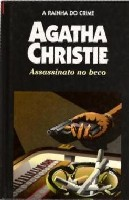

Assassinato no Beco
Murder in the Mews
Quatro estranhos casos desafiam a inteligência de Hercule Poirot. No primeiro, que dá título ao livro, o detetive belga investiga a morte de uma mulher. Todas as pistas indicam que se trata de um suicídio, mas Poirot desconfia de assassinato. Em O Roubo Inacreditável, Hercule Poirot é contratado para desvendar o desaparecimento de documentos secretos do governo inglês. Em O Espelho do Morto, ele se depara, mais uma vez, com um estranho suicídio. Agora, a vítima é um excêntrico aristocrata, encontrado morto dentro do próprio quarto com todas as portas trancadas pelo lado de dentro. O último caso é Triângulo de Rodes. Um assassinato brutal é cometido, e um inocente está prestes a ir para a cadeia. Hercule Poirot põe suas “pequenas células cinzentas” para funcionar até descobrir a verdadeira identidade do culpado.